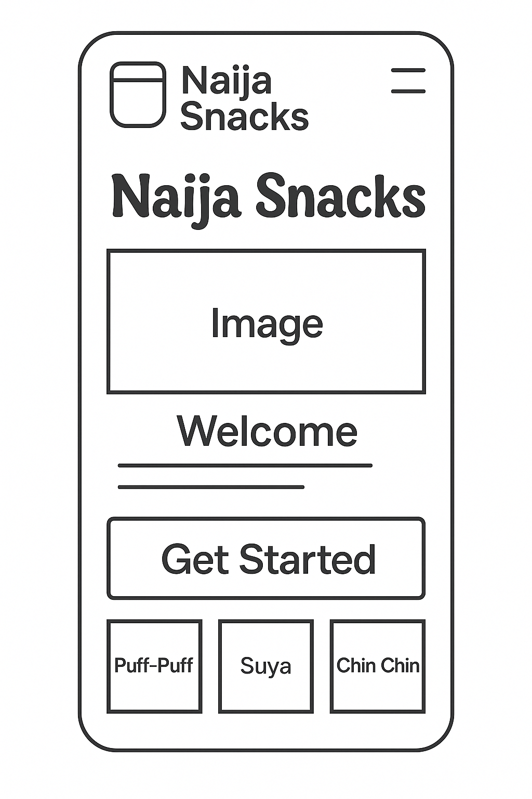
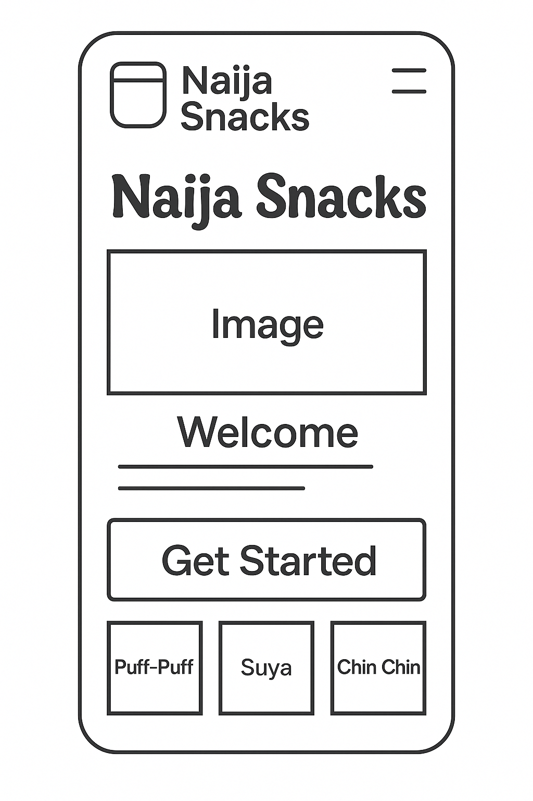

Wireframes
Mobile View:
Desktop View:

Naija Snacks: The Street Food Experience
This name reflects the focus on showcasing the vibrant world of Nigerian street snacks—from puff-puff and chin chin to suya and boli. It's engaging, culturally rich, and memorable.
Optional domain: naijasnacks.com (unverified availability)
The website will promote and celebrate Nigerian street food by providing rich visuals, fun facts, ingredient highlights, and snack origins. It will also feature a “Snack of the Day” generator, ratings, and brief descriptions. This site will serve food lovers, tourists, and anyone curious about Nigerian cuisine.
Mobile View:
Desktop View: